証券アプリ設定 25/50/75日線：移動平均線と株価の位置関係パターン別 過去事例
移動平均: 25/50/75日（単純移動平均, 終値）。
▲=条件を満たした日（エントリーは翌営業日の始値）。黄色の網掛け=その後20営業日。下段=出来高、MACD(12,26,9)。
赤枠=20日後に上昇した事例、青枠=下落した事例（乱数で抽出。代表性は保証しない）。
対象はTOPIX100（現構成を遡って使用＝生存者バイアスあり）。株価は分割調整済み・配当未調整。売買の推奨ではありません。
直近チャート（比較用）
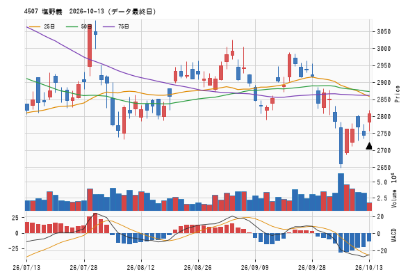
4507 塩野義 2026-10-13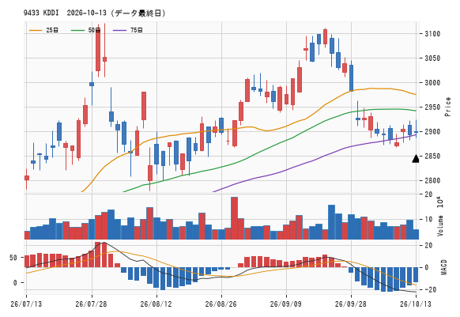
9433 KDDI 2026-10-13P1 短期のみ上｜上向き
事例数 17,938件 / 20日後上昇の割合 55.6% / 平均 +1.37%
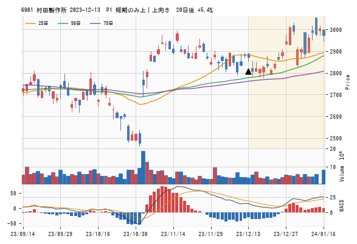
上昇 6981 村田製作所 2023-12-13
5日 +0.4% / 10日 +4.4% / 20日 +5.4%（対TOPIX -1.4pt, 最大下落 -1.6%）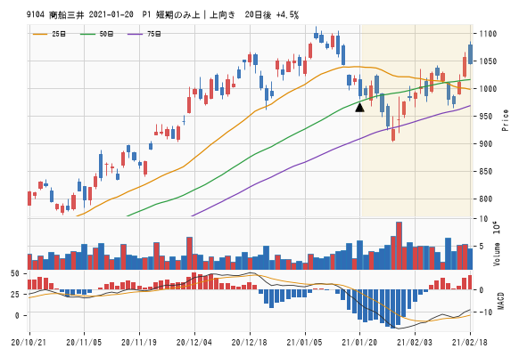
上昇 9104 商船三井 2021-01-20
5日 -6.8% / 10日 -0.8% / 20日 +4.5%（対TOPIX +0.1pt, 最大下落 -9.7%）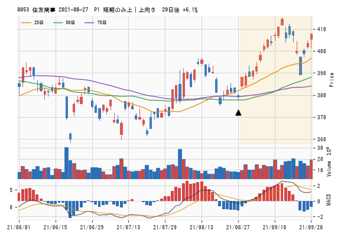
上昇 8053 住友商事 2021-08-27
5日 +2.3% / 10日 +6.0% / 20日 +6.1%（対TOPIX -0.8pt, 最大下落 -0.3%）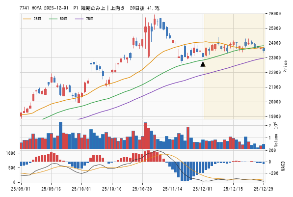
上昇 7741 HOYA 2025-12-01
5日 +3.3% / 10日 +3.9% / 20日 +1.3%（対TOPIX -1.3pt, 最大下落 -0.2%）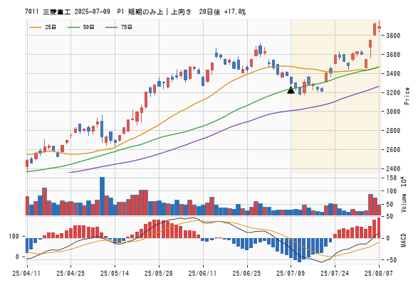
上昇 7011 三菱重工 2025-07-09
5日 -0.4% / 10日 +8.8% / 20日 +17.8%（対TOPIX +12.0pt, 最大下落 -4.0%）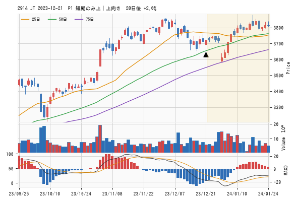
上昇 2914 JT 2023-12-21
5日 -3.3% / 10日 +1.7% / 20日 +2.0%（対TOPIX -6.4pt, 最大下落 -4.0%）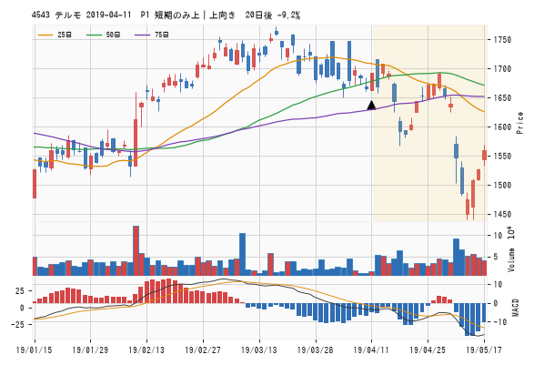
下落 4543 テルモ 2019-04-11
5日 -7.2% / 10日 -2.5% / 20日 -9.2%（対TOPIX -5.5pt, 最大下落 -16.0%）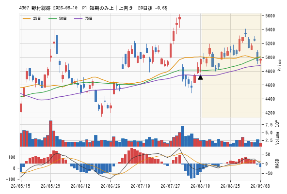
下落 4307 野村総研 2026-08-10
5日 -3.3% / 10日 +2.3% / 20日 -0.6%（対TOPIX +1.1pt, 最大下落 -4.1%）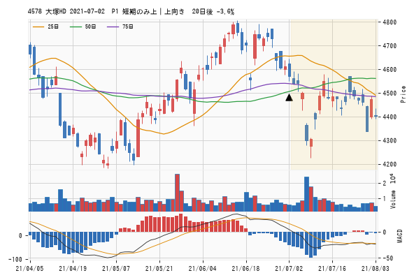
下落 4578 大塚HD 2021-07-02
5日 -5.7% / 10日 -1.7% / 20日 -3.6%（対TOPIX -0.9pt, 最大下落 -7.4%）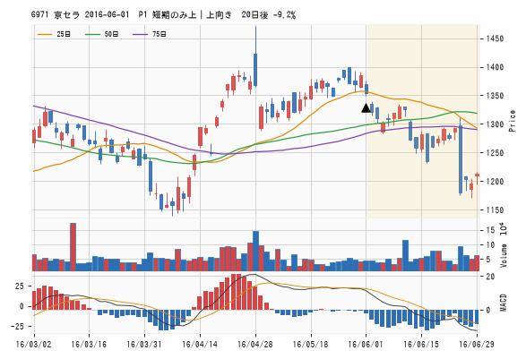
下落 6971 京セラ 2016-06-01
5日 -1.2% / 10日 -4.0% / 20日 -9.2%（対TOPIX -1.8pt, 最大下落 -12.3%）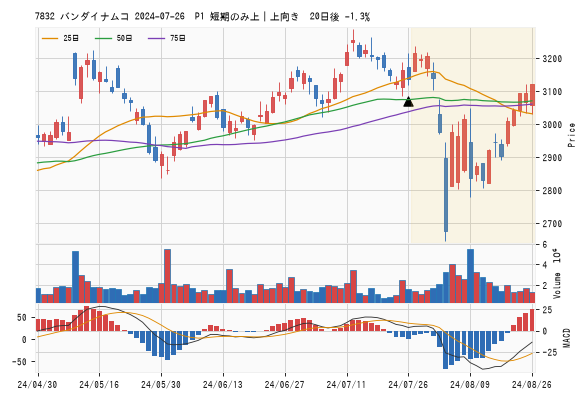
下落 7832 バンダイナムコ 2024-07-26
5日 -5.8% / 10日 -10.3% / 20日 -1.3%（対TOPIX +1.6pt, 最大下落 -16.3%）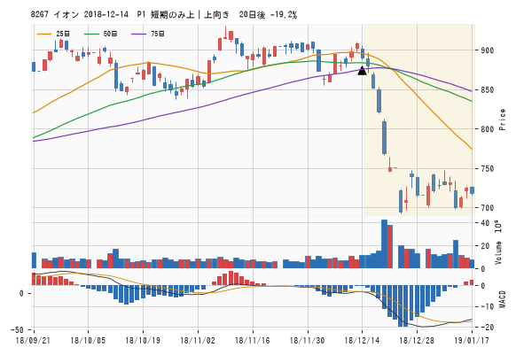
下落 8267 イオン 2018-12-14
5日 -15.5% / 10日 -19.4% / 20日 -19.2%（対TOPIX -16.3pt, 最大下落 -22.1%）P1 短期のみ上｜下向き
事例数 2,411件 / 20日後上昇の割合 56.4% / 平均 +1.31%
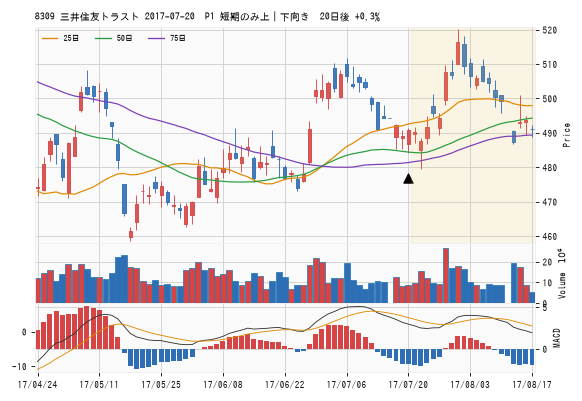
上昇 8309 三井住友トラスト 2017-07-20
5日 +1.0% / 10日 +3.4% / 20日 +0.3%（対TOPIX +1.3pt, 最大下落 -2.1%）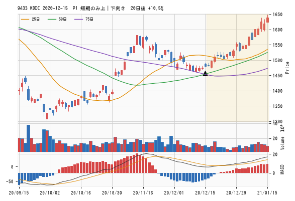
上昇 9433 KDDI 2020-12-15
5日 +2.0% / 10日 +4.7% / 20日 +10.5%（対TOPIX +7.0pt, 最大下落 -0.6%）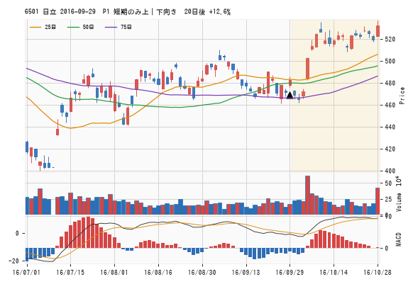
上昇 6501 日立 2016-09-29
5日 +8.7% / 10日 +9.8% / 20日 +12.6%（対TOPIX +7.3pt, 最大下落 -2.4%）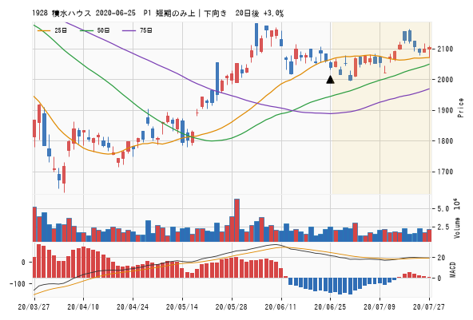
上昇 1928 積水ハウス 2020-06-25
5日 +1.2% / 10日 +0.6% / 20日 +3.0%（対TOPIX +4.6pt, 最大下落 -2.4%）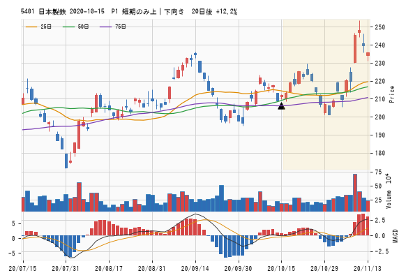
上昇 5401 日本製鉄 2020-10-15
5日 +5.9% / 10日 -1.5% / 20日 +12.2%（対TOPIX +7.6pt, 最大下落 -4.3%）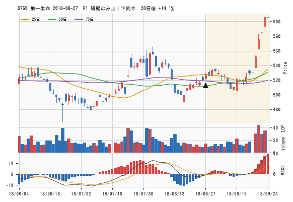
上昇 8750 第一生命 2018-08-27
5日 -1.2% / 10日 -1.7% / 20日 +14.1%（対TOPIX +10.6pt, 最大下落 -4.9%）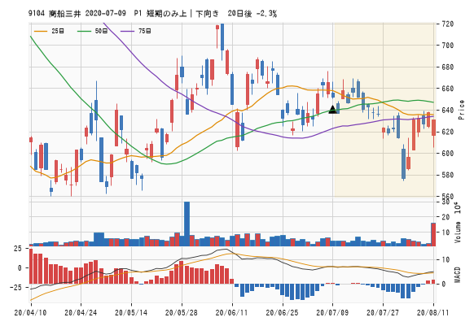
下落 9104 商船三井 2020-07-09
5日 +1.0% / 10日 -3.5% / 20日 -2.3%（対TOPIX -4.3pt, 最大下落 -11.1%）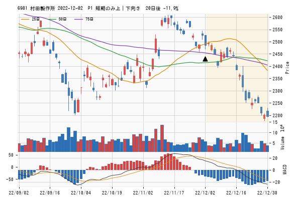
下落 6981 村田製作所 2022-12-02
5日 -1.4% / 10日 -4.2% / 20日 -11.9%（対TOPIX -8.9pt, 最大下落 -12.6%）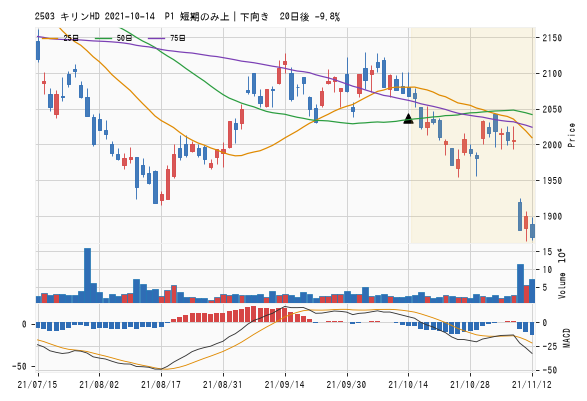
下落 2503 キリンHD 2021-10-14
5日 -3.0% / 10日 -4.1% / 20日 -9.8%（対TOPIX -11.5pt, 最大下落 -10.0%）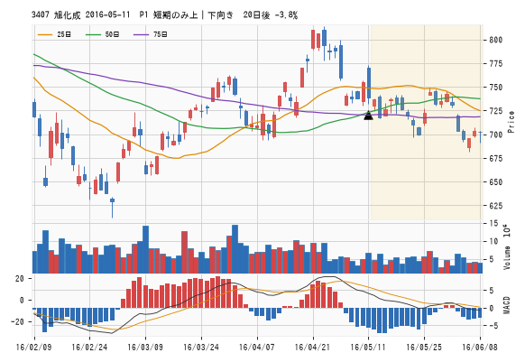
下落 3407 旭化成 2016-05-11
5日 +0.5% / 10日 -1.0% / 20日 -3.8%（対TOPIX -6.2pt, 最大下落 -6.7%）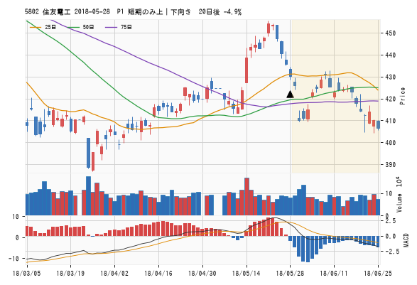
下落 5802 住友電工 2018-05-28
5日 -1.1% / 10日 -1.1% / 20日 -4.9%（対TOPIX -2.9pt, 最大下落 -5.4%）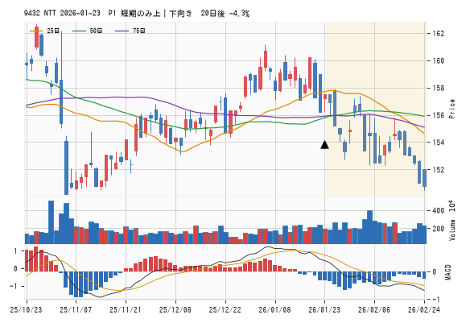
下落 9432 NTT 2026-01-23
5日 -1.7% / 10日 -3.2% / 20日 -4.3%（対TOPIX -11.5pt, 最大下落 -4.4%）P2 中期のみ上｜上向き
事例数 1,982件 / 20日後上昇の割合 53.6% / 平均 +1.06%
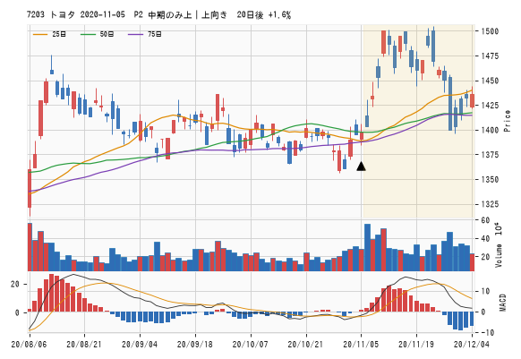
上昇 7203 トヨタ 2020-11-05
5日 +5.2% / 10日 +3.3% / 20日 +1.6%（対TOPIX -6.2pt, 最大下落 -1.3%）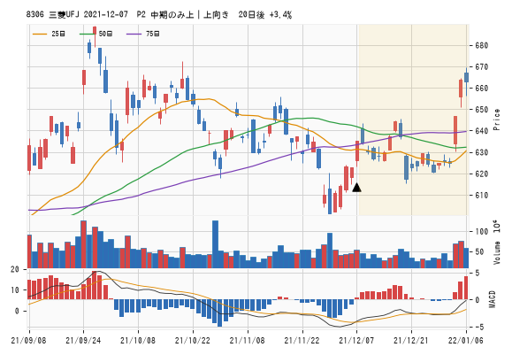
上昇 8306 三菱UFJ 2021-12-07
5日 -1.7% / 10日 -2.8% / 20日 +3.4%（対TOPIX +3.8pt, 最大下落 -4.0%）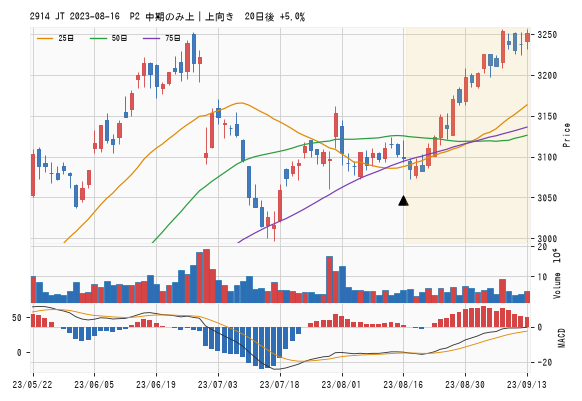
上昇 2914 JT 2023-08-16
5日 +0.9% / 10日 +3.3% / 20日 +5.0%（対TOPIX -0.5pt, 最大下落 -0.7%）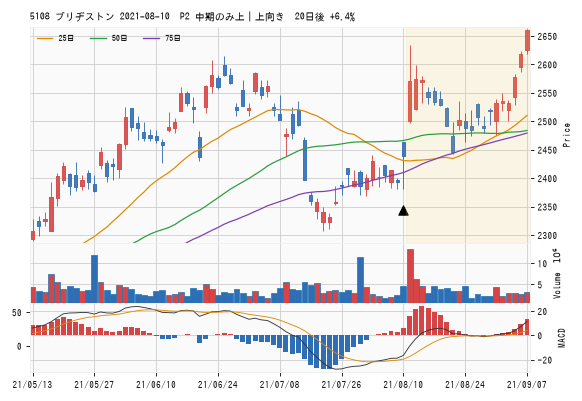
上昇 5108 ブリヂストン 2021-08-10
5日 +1.3% / 10日 -0.5% / 20日 +6.4%（対TOPIX +0.6pt, 最大下落 -2.3%）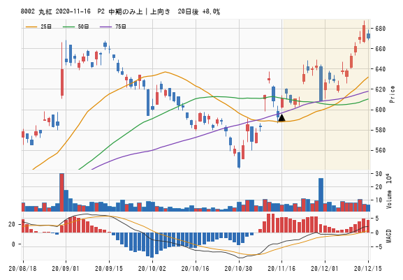
上昇 8002 丸紅 2020-11-16
5日 +2.4% / 10日 +1.0% / 20日 +8.0%（対TOPIX +5.6pt, 最大下落 -3.0%）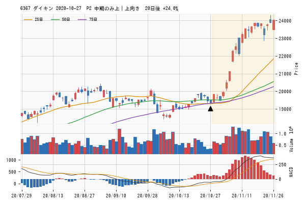
上昇 6367 ダイキン 2020-10-27
5日 +5.8% / 10日 +19.8% / 20日 +24.0%（対TOPIX +13.2pt, 最大下落 -0.2%）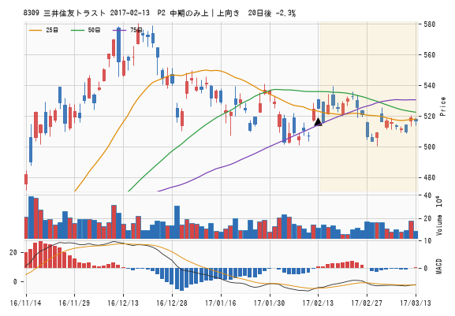
下落 8309 三井住友トラスト 2017-02-13
5日 -0.2% / 10日 -4.3% / 20日 -2.3%（対TOPIX -3.4pt, 最大下落 -5.5%）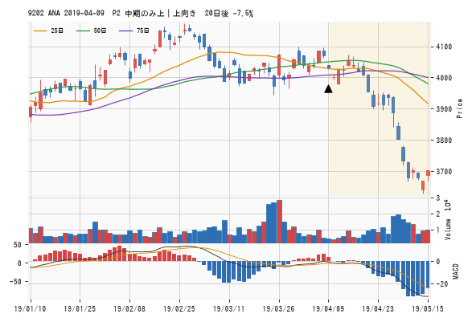
下落 9202 ANA 2019-04-09
5日 +0.9% / 10日 -2.1% / 20日 -7.5%（対TOPIX -3.9pt, 最大下落 -9.3%）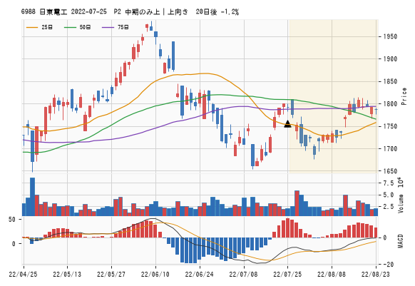
下落 6988 日東電工 2022-07-25
5日 -4.8% / 10日 -4.2% / 20日 -1.2%（対TOPIX -2.6pt, 最大下落 -7.4%）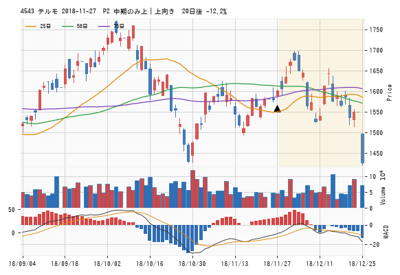
下落 4543 テルモ 2018-11-27
5日 +1.6% / 10日 -5.3% / 20日 -12.2%（対TOPIX +1.9pt, 最大下落 -12.6%）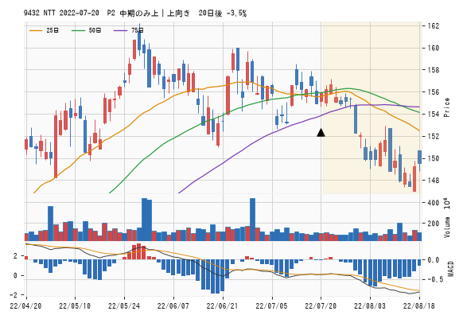
下落 9432 NTT 2022-07-20
5日 +0.1% / 10日 -3.3% / 20日 -3.5%（対TOPIX -6.3pt, 最大下落 -5.2%）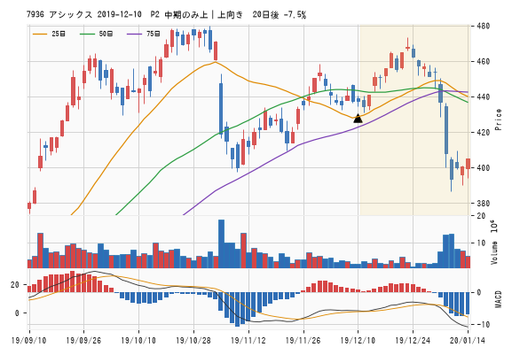
下落 7936 アシックス 2019-12-10
5日 +4.1% / 10日 +5.6% / 20日 -7.5%（対TOPIX -8.8pt, 最大下落 -11.7%）P2 中期のみ上｜下向き
事例数 387件 / 20日後上昇の割合 59.7% / 平均 +2.05%
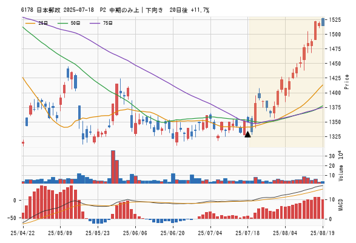
上昇 6178 日本郵政 2025-07-18
5日 +1.4% / 10日 +3.8% / 20日 +11.7%（対TOPIX +1.8pt, 最大下落 -2.1%）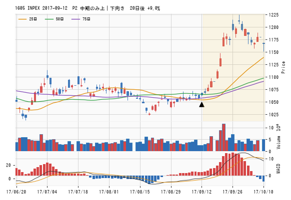
上昇 1605 INPEX 2017-09-12
5日 +3.8% / 10日 +11.6% / 20日 +9.0%（対TOPIX +4.6pt, 最大下落 -0.4%）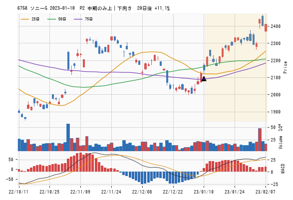
上昇 6758 ソニーG 2023-01-10
5日 +2.5% / 10日 +7.6% / 20日 +11.1%（対TOPIX +6.1pt, 最大下落 -0.5%）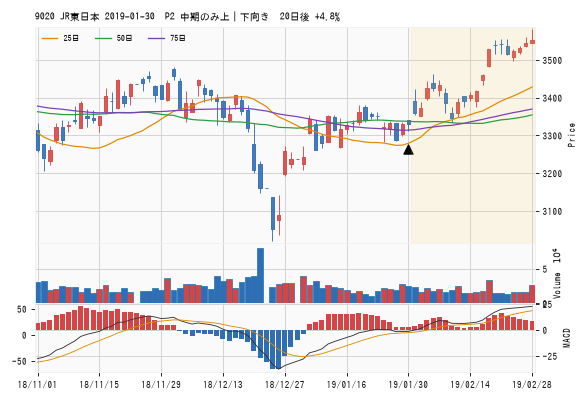
上昇 9020 JR東日本 2019-01-30
5日 +1.2% / 10日 +0.5% / 20日 +4.8%（対TOPIX +2.6pt, 最大下落 -1.7%）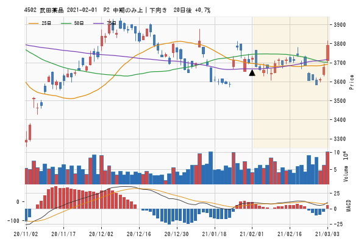
上昇 4502 武田薬品 2021-02-01
5日 -3.2% / 10日 -1.6% / 20日 +0.7%（対TOPIX -3.0pt, 最大下落 -4.9%）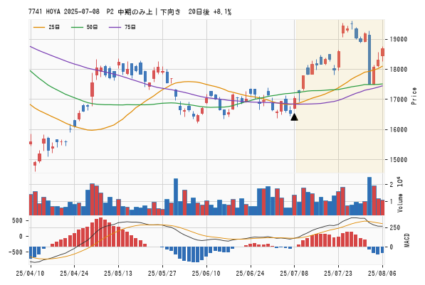
上昇 7741 HOYA 2025-07-08
5日 +4.9% / 10日 +7.5% / 20日 +8.1%（対TOPIX +3.2pt, 最大下落 -2.2%）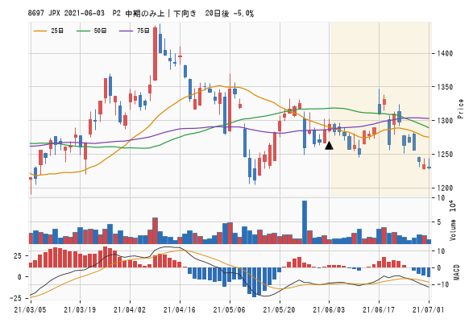
下落 8697 JPX 2021-06-03
5日 -2.4% / 10日 +1.2% / 20日 -5.0%（対TOPIX -4.4pt, 最大下落 -5.3%）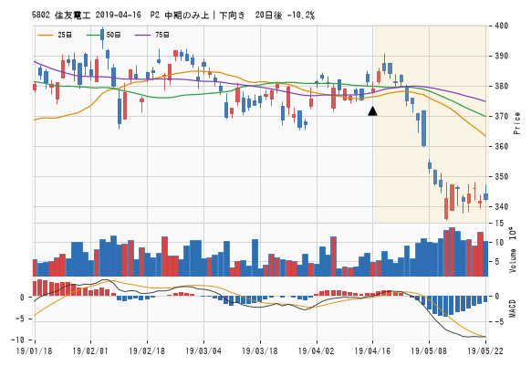
下落 5802 住友電工 2019-04-16
5日 +0.0% / 10日 -7.5% / 20日 -10.2%（対TOPIX -5.0pt, 最大下落 -12.0%）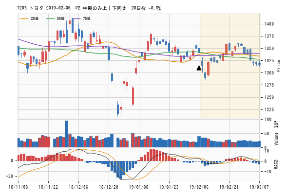
下落 7203 トヨタ 2019-02-06
5日 -0.1% / 10日 +1.6% / 20日 -0.6%（対TOPIX -1.9pt, 最大下落 -2.9%）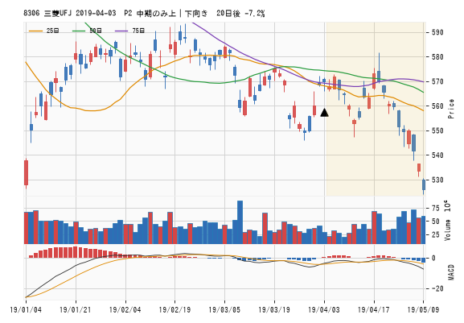
下落 8306 三菱UFJ 2019-04-03
5日 -1.3% / 10日 +1.1% / 20日 -7.2%（対TOPIX -2.7pt, 最大下落 -7.6%）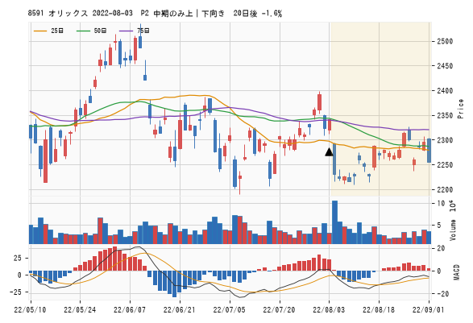
下落 8591 オリックス 2022-08-03
5日 -2.8% / 10日 -1.0% / 20日 -1.6%（対TOPIX -1.5pt, 最大下落 -3.6%）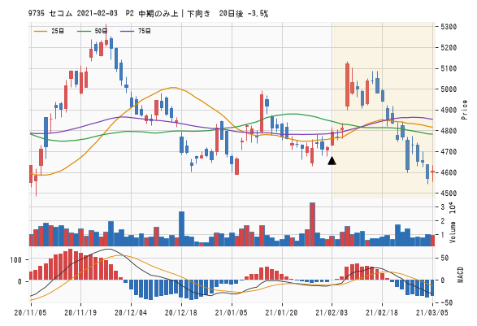
下落 9735 セコム 2021-02-03
5日 +4.8% / 10日 +3.6% / 20日 -3.5%（対TOPIX -5.1pt, 最大下落 -4.8%）P3 長期のみ上｜上向き
事例数 819件 / 20日後上昇の割合 47.9% / 平均 -0.15%
上昇 8002 丸紅 2018-04-11
5日 +0.1% / 10日 +4.9% / 20日 +9.6%（対TOPIX +6.9pt, 最大下落 -1.5%）上昇 7974 任天堂 2024-05-13
5日 +3.0% / 10日 +1.7% / 20日 +7.2%（対TOPIX +5.2pt, 最大下落 -0.2%）上昇 8591 オリックス 2020-09-01
5日 +4.4% / 10日 +7.3% / 20日 +0.3%（対TOPIX +0.3pt, 最大下落 -1.0%）上昇 8058 三菱商事 2020-08-17
5日 +1.2% / 10日 +9.0% / 20日 +11.5%（対TOPIX +8.7pt, 最大下落 -0.8%）上昇 9202 ANA 2022-05-13
5日 +0.7% / 10日 +4.7% / 20日 +1.9%（対TOPIX -0.9pt, 最大下落 -1.8%）上昇 9503 関西電力 2017-08-30
5日 +1.6% / 10日 +1.6% / 20日 +2.5%（対TOPIX -1.5pt, 最大下落 -0.6%）下落 9432 NTT 2016-10-26
5日 -1.7% / 10日 -5.6% / 20日 -4.2%（対TOPIX -10.3pt, 最大下落 -11.9%）下落 8697 JPX 2017-03-13
5日 -1.5% / 10日 -0.9% / 20日 -3.7%（対TOPIX +0.6pt, 最大下落 -6.2%）下落 8053 住友商事 2021-06-17
5日 -0.0% / 10日 -2.6% / 20日 -2.7%（対TOPIX +0.3pt, 最大下落 -5.5%）下落 8309 三井住友トラスト 2022-04-22
5日 +0.7% / 10日 -0.6% / 20日 -3.2%（対TOPIX -3.7pt, 最大下落 -4.8%）下落 4543 テルモ 2022-01-04
5日 -5.8% / 10日 -15.2% / 20日 -12.3%（対TOPIX -7.2pt, 最大下落 -17.9%）下落 4901 富士フイルム 2020-04-17
5日 -3.9% / 10日 -4.3% / 20日 -6.7%（対TOPIX -11.0pt, 最大下落 -9.6%）
P3 長期のみ上｜下向き
事例数 9,148件 / 20日後上昇の割合 51.9% / 平均 +0.59%
上昇 2802 味の素 2026-01-22
5日 -5.2% / 10日 -1.2% / 20日 +25.8%（対TOPIX +20.9pt, 最大下落 -7.8%）上昇 4543 テルモ 2021-04-22
5日 +1.3% / 10日 -1.3% / 20日 +1.8%（対TOPIX +1.0pt, 最大下落 -6.8%）上昇 4578 大塚HD 2017-10-16
5日 +4.0% / 10日 +3.1% / 20日 +1.0%（対TOPIX -2.3pt, 最大下落 -0.1%）上昇 7733 オリンパス 2023-03-09
5日 -6.2% / 10日 -6.7% / 20日 +1.6%（対TOPIX +4.4pt, 最大下落 -8.4%）上昇 8002 丸紅 2017-06-19
5日 -1.4% / 10日 +3.8% / 20日 +5.5%（対TOPIX +7.1pt, 最大下落 -1.4%）上昇 7832 バンダイナムコ 2020-05-12
5日 +0.3% / 10日 +7.5% / 20日 +11.1%（対TOPIX -0.7pt, 最大下落 -2.3%）下落 6902 デンソー 2019-01-11
5日 -0.0% / 10日 +0.3% / 20日 -6.7%（対TOPIX -10.0pt, 最大下落 -10.8%）下落 3382 セブン&アイHD 2019-07-17
5日 +0.5% / 10日 -0.1% / 20日 -1.7%（対TOPIX +3.2pt, 最大下落 -3.7%）下落 8766 東京海上 2016-03-14
5日 -3.9% / 10日 -2.9% / 20日 -14.6%（対TOPIX -9.9pt, 最大下落 -17.3%）下落 1925 大和ハウス 2019-05-30
5日 +1.3% / 10日 +1.0% / 20日 -4.2%（対TOPIX -6.5pt, 最大下落 -5.8%）下落 6758 ソニーG 2020-04-20
5日 -0.7% / 10日 +1.7% / 20日 -0.8%（対TOPIX -4.9pt, 最大下落 -3.7%）下落 7203 トヨタ 2024-11-01
5日 +0.6% / 10日 +1.5% / 20日 -1.0%（対TOPIX -3.0pt, 最大下落 -3.4%）
P4 短期+中期｜上向き
事例数 10,632件 / 20日後上昇の割合 57.2% / 平均 +1.58%
上昇 6971 京セラ 2019-06-04
5日 +1.3% / 10日 +1.0% / 20日 +6.0%（対TOPIX +1.5pt, 最大下落 -2.1%）上昇 8001 伊藤忠 2019-04-18
5日 -0.2% / 10日 -2.5% / 20日 +0.2%（対TOPIX +5.1pt, 最大下落 -6.6%）上昇 6861 キーエンス 2026-07-08
5日 +2.0% / 10日 -3.8% / 20日 +13.9%（対TOPIX +12.8pt, 最大下落 -8.2%）上昇 1605 INPEX 2024-06-05
5日 +2.5% / 10日 -0.8% / 20日 +6.5%（対TOPIX +2.4pt, 最大下落 -2.3%）上昇 1928 積水ハウス 2019-08-02
5日 +0.6% / 10日 +2.1% / 20日 +4.1%（対TOPIX +4.9pt, 最大下落 -2.5%）上昇 1928 積水ハウス 2026-03-05
5日 -0.4% / 10日 -1.9% / 20日 +0.0%（対TOPIX -0.6pt, 最大下落 -3.4%）下落 8725 MS&AD 2021-10-28
5日 +1.2% / 10日 +1.6% / 20日 -9.1%（対TOPIX -6.6pt, 最大下落 -9.7%）下落 8002 丸紅 2024-07-23
5日 -3.5% / 10日 -27.3% / 20日 -16.6%（対TOPIX -11.2pt, 最大下落 -35.3%）下落 6762 TDK 2024-03-25
5日 +0.2% / 10日 +2.7% / 20日 -4.2%（対TOPIX -1.0pt, 最大下落 -6.6%）下落 2502 アサヒGHD 2022-09-27
5日 +1.1% / 10日 -5.5% / 20日 -5.6%（対TOPIX -9.6pt, 最大下落 -8.2%）下落 6273 SMC 2024-04-03
5日 -0.1% / 10日 -5.8% / 20日 -4.4%（対TOPIX -4.3pt, 最大下落 -12.2%）下落 6178 日本郵政 2022-03-02
5日 -5.3% / 10日 -0.2% / 20日 -4.8%（対TOPIX -9.3pt, 最大下落 -6.1%）
P4 短期+中期｜下向き
事例数 728件 / 20日後上昇の割合 55.6% / 平均 +1.82%
上昇 6326 クボタ 2026-07-10
5日 -2.2% / 10日 +5.2% / 20日 +0.9%（対TOPIX -0.5pt, 最大下落 -7.8%）上昇 8316 三井住友FG 2020-07-10
5日 +1.0% / 10日 -1.9% / 20日 +1.8%（対TOPIX -1.2pt, 最大下落 -8.2%）上昇 8031 三井物産 2024-11-28
5日 +1.4% / 10日 +4.1% / 20日 +3.6%（対TOPIX +0.5pt, 最大下落 -1.7%）上昇 8802 三菱地所 2020-10-19
5日 -1.5% / 10日 -1.4% / 20日 +10.2%（対TOPIX +4.0pt, 最大下落 -5.7%）上昇 9104 商船三井 2023-01-06
5日 -0.5% / 10日 +6.1% / 20日 +4.4%（対TOPIX -0.3pt, 最大下落 -2.4%）上昇 6098 リクルートHD 2025-07-14
5日 -1.0% / 10日 +13.7% / 20日 +13.6%（対TOPIX +4.4pt, 最大下落 -3.5%）下落 8750 第一生命 2018-06-14
5日 -5.3% / 10日 -5.3% / 20日 -5.6%（対TOPIX +0.5pt, 最大下落 -11.1%）下落 8604 野村HD 2022-08-10
5日 +1.2% / 10日 +0.1% / 20日 -1.0%（対TOPIX -0.9pt, 最大下落 -2.9%）下落 9020 JR東日本 2021-07-15
5日 -3.4% / 10日 -8.0% / 20日 -7.3%（対TOPIX -6.5pt, 最大下落 -10.4%）下落 9735 セコム 2019-04-15
5日 -2.4% / 10日 -0.6% / 20日 -0.6%（対TOPIX +3.9pt, 最大下落 -6.0%）下落 6758 ソニーG 2022-08-12
5日 +4.4% / 10日 +0.1% / 20日 -7.0%（対TOPIX -6.5pt, 最大下落 -9.4%）下落 5020 ENEOS 2020-06-22
5日 -4.4% / 10日 -1.9% / 20日 -0.7%（対TOPIX +2.1pt, 最大下落 -5.7%）
P5 短期+長期｜上向き
事例数 493件 / 20日後上昇の割合 56.2% / 平均 +1.25%
上昇 8053 住友商事 2025-01-24
5日 +1.0% / 10日 +1.5% / 20日 +3.8%（対TOPIX +5.4pt, 最大下落 -3.8%）上昇 4543 テルモ 2020-12-07
5日 -2.1% / 10日 +1.3% / 20日 +2.1%（対TOPIX -0.5pt, 最大下落 -3.1%）上昇 1925 大和ハウス 2021-03-01
5日 +0.9% / 10日 +6.1% / 20日 +9.0%（対TOPIX +5.3pt, 最大下落 -2.2%）上昇 6758 ソニーG 2024-10-21
5日 -0.8% / 10日 +0.3% / 20日 +7.9%（対TOPIX +6.6pt, 最大下落 -3.3%）上昇 6971 京セラ 2021-12-06
5日 +4.3% / 10日 +3.0% / 20日 +6.3%（対TOPIX +2.2pt, 最大下落 -0.5%）上昇 6861 キーエンス 2026-02-10
5日 +1.3% / 10日 +13.8% / 20日 +7.0%（対TOPIX +12.5pt, 最大下落 -3.6%）下落 6723 ルネサス 2021-04-28
5日 -9.8% / 10日 -11.0% / 20日 -11.5%（対TOPIX -12.4pt, 最大下落 -15.8%）下落 8316 三井住友FG 2021-06-10
5日 +0.6% / 10日 -1.8% / 20日 -4.8%（対TOPIX -1.2pt, 最大下落 -4.8%）下落 7270 SUBARU 2017-10-12
5日 +1.6% / 10日 +3.9% / 20日 -5.4%（対TOPIX -12.2pt, 最大下落 -6.2%）下落 6857 アドバンテスト 2018-08-17
5日 +4.6% / 10日 +8.9% / 20日 -4.3%（対TOPIX -6.5pt, 最大下落 -9.6%）下落 4063 信越化学 2021-12-17
5日 +0.9% / 10日 +5.5% / 20日 -3.9%（対TOPIX -1.7pt, 最大下落 -4.5%）下落 6902 デンソー 2022-08-29
5日 -6.2% / 10日 -4.0% / 20日 -8.1%（対TOPIX -2.9pt, 最大下落 -9.6%）
P5 短期+長期｜下向き
事例数 1,676件 / 20日後上昇の割合 55.7% / 平均 +1.33%
上昇 8015 豊田通商 2024-10-21
5日 -0.1% / 10日 -1.1% / 20日 +2.3%（対TOPIX +1.0pt, 最大下落 -6.3%）上昇 3382 セブン&アイHD 2025-05-26
5日 +0.9% / 10日 +1.5% / 20日 +4.2%（対TOPIX +3.8pt, 最大下落 -1.7%）上昇 4689 LINEヤフー 2016-12-02
5日 +6.9% / 10日 +5.7% / 20日 +7.1%（対TOPIX +1.3pt, 最大下落 -1.7%）上昇 7741 HOYA 2020-05-12
5日 -2.1% / 10日 -1.1% / 20日 +1.0%（対TOPIX -10.8pt, 最大下落 -3.6%）上昇 7203 トヨタ 2026-08-05
5日 +1.9% / 10日 +4.6% / 20日 +6.4%（対TOPIX +4.8pt, 最大下落 -0.4%）上昇 6367 ダイキン 2025-06-18
5日 +1.9% / 10日 +9.3% / 20日 +13.1%（対TOPIX +14.8pt, 最大下落 -0.9%）下落 6752 パナソニック 2019-02-22
5日 -3.5% / 10日 -7.1% / 20日 -11.5%（対TOPIX -8.6pt, 最大下落 -11.8%）下落 3382 セブン&アイHD 2016-08-17
5日 +2.6% / 10日 -1.4% / 20日 -1.2%（対TOPIX -2.1pt, 最大下落 -3.0%）下落 7182 ゆうちょ銀 2020-04-24
5日 +1.0% / 10日 +4.6% / 20日 -9.0%（対TOPIX -19.7pt, 最大下落 -12.5%）下落 8591 オリックス 2022-12-05
5日 +3.1% / 10日 +1.0% / 20日 -1.2%（対TOPIX +2.3pt, 最大下落 -1.6%）下落 7270 SUBARU 2020-12-08
5日 +2.3% / 10日 -1.5% / 20日 -1.2%（対TOPIX -5.1pt, 最大下落 -6.8%）下落 8306 三菱UFJ 2019-02-27
5日 +0.4% / 10日 -3.0% / 20日 -5.2%（対TOPIX -3.9pt, 最大下落 -5.8%）
P6 中期+長期｜上向き
事例数 2,692件 / 20日後上昇の割合 50.1% / 平均 +0.29%
上昇 1925 大和ハウス 2019-12-23
5日 +0.4% / 10日 +0.7% / 20日 +3.5%（対TOPIX +5.2pt, 最大下落 -0.7%）上昇 8725 MS&AD 2018-08-01
5日 -0.7% / 10日 -1.6% / 20日 +1.0%（対TOPIX +2.6pt, 最大下落 -3.0%）上昇 6702 富士通 2024-06-04
5日 +3.6% / 10日 +3.1% / 20日 +9.0%（対TOPIX +5.9pt, 最大下落 -1.1%）上昇 6501 日立 2025-09-10
5日 -1.5% / 10日 -1.9% / 20日 +9.9%（対TOPIX +7.1pt, 最大下落 -4.8%）上昇 9433 KDDI 2021-12-17
5日 -0.9% / 10日 +1.4% / 20日 +5.2%（対TOPIX +7.3pt, 最大下落 -2.1%）上昇 6702 富士通 2019-06-13
5日 +1.1% / 10日 +0.3% / 20日 +3.2%（対TOPIX +3.0pt, 最大下落 -1.3%）下落 5802 住友電工 2017-05-23
5日 -3.3% / 10日 -3.8% / 20日 -5.4%（対TOPIX -7.8pt, 最大下落 -6.7%）下落 4503 アステラス 2016-09-28
5日 -2.0% / 10日 -4.0% / 20日 -3.3%（対TOPIX -6.5pt, 最大下落 -5.6%）下落 8001 伊藤忠 2023-02-15
5日 -2.0% / 10日 -0.4% / 20日 -2.5%（対TOPIX +0.4pt, 最大下落 -3.7%）下落 8015 豊田通商 2022-02-14
5日 +1.4% / 10日 -3.9% / 20日 -7.3%（対TOPIX -2.1pt, 最大下落 -14.8%）下落 9433 KDDI 2026-03-17
5日 +1.7% / 10日 -1.1% / 20日 -1.0%（対TOPIX -5.1pt, 最大下落 -3.1%）下落 7203 トヨタ 2026-04-20
5日 -8.3% / 10日 -12.9% / 20日 -10.7%（対TOPIX -13.5pt, 最大下落 -16.4%）
P6 中期+長期｜下向き
事例数 13,539件 / 20日後上昇の割合 55.8% / 平均 +1.23%
上昇 7269 スズキ 2019-04-17
5日 +1.5% / 10日 -3.0% / 20日 +0.8%（対TOPIX +6.3pt, 最大下落 -6.7%）上昇 9432 NTT 2020-06-03
5日 +2.3% / 10日 +2.0% / 20日 +0.2%（対TOPIX +4.8pt, 最大下落 -0.1%）上昇 9434 ソフトバンク 2022-02-08
5日 -1.1% / 10日 -2.6% / 20日 +1.0%（対TOPIX +7.1pt, 最大下落 -3.1%）上昇 9020 JR東日本 2018-11-08
5日 +0.3% / 10日 +2.9% / 20日 +1.4%（対TOPIX +5.7pt, 最大下落 -0.9%）上昇 6503 三菱電機 2017-05-17
5日 +1.6% / 10日 -1.2% / 20日 +3.3%（対TOPIX +0.8pt, 最大下落 -1.4%）上昇 9735 セコム 2025-02-14
5日 -2.0% / 10日 +0.5% / 20日 +0.5%（対TOPIX +0.7pt, 最大下落 -2.9%）下落 5020 ENEOS 2019-06-21
5日 +0.8% / 10日 -0.6% / 20日 -4.2%（対TOPIX -3.0pt, 最大下落 -4.5%）下落 4901 富士フイルム 2017-05-09
5日 -2.0% / 10日 -5.6% / 20日 -5.5%（対TOPIX -6.2pt, 最大下落 -6.6%）下落 5401 日本製鉄 2021-12-27
5日 +4.2% / 10日 +15.6% / 20日 -1.9%（対TOPIX +5.8pt, 最大下落 -3.1%）下落 8750 第一生命 2019-04-15
5日 -1.7% / 10日 -3.1% / 20日 -1.9%（対TOPIX +2.6pt, 最大下落 -8.8%）下落 4502 武田薬品 2019-07-08
5日 -1.0% / 10日 -5.4% / 20日 -3.4%（対TOPIX +1.9pt, 最大下落 -7.2%）下落 4307 野村総研 2022-12-14
5日 -1.9% / 10日 -2.9% / 20日 -2.3%（対TOPIX +1.7pt, 最大下落 -5.0%）
P7 3本すべて上｜上向き
事例数 28,967件 / 20日後上昇の割合 56.0% / 平均 +1.29%
上昇 8031 三井物産 2019-05-16
5日 -0.1% / 10日 +1.5% / 20日 +4.3%（対TOPIX +4.9pt, 最大下落 -3.1%）上昇 6762 TDK 2023-08-22
5日 +4.4% / 10日 +8.1% / 20日 +13.6%（対TOPIX +7.0pt, 最大下落 -0.1%）上昇 5401 日本製鉄 2023-10-13
5日 +0.2% / 10日 +1.2% / 20日 +1.9%（対TOPIX -0.1pt, 最大下落 -3.1%）上昇 7751 キヤノン 2021-11-15
5日 -0.6% / 10日 -4.0% / 20日 +1.9%（対TOPIX +5.7pt, 最大下落 -5.3%）上昇 8591 オリックス 2017-02-15
5日 +1.0% / 10日 +0.3% / 20日 +0.3%（対TOPIX -0.9pt, 最大下落 -1.0%）上昇 4689 LINEヤフー 2023-10-31
5日 +10.7% / 10日 +11.4% / 20日 +10.4%（対TOPIX +7.1pt, 最大下落 -1.6%）下落 2802 味の素 2017-03-22
5日 +1.6% / 10日 -1.2% / 20日 -4.3%（対TOPIX -1.6pt, 最大下落 -5.7%）下落 9432 NTT 2016-05-19
5日 +0.3% / 10日 -2.4% / 20日 -7.3%（対TOPIX -0.7pt, 最大下落 -7.4%）下落 4507 塩野義 2016-07-29
5日 -5.1% / 10日 -3.9% / 20日 -14.1%（対TOPIX -15.0pt, 最大下落 -15.9%）下落 7832 バンダイナムコ 2025-11-18
5日 +2.6% / 10日 -3.2% / 20日 -5.4%（対TOPIX -8.8pt, 最大下落 -6.9%）下落 2802 味の素 2025-03-06
5日 -0.0% / 10日 +0.0% / 20日 -4.2%（対TOPIX +3.1pt, 最大下落 -5.8%）下落 6301 コマツ 2021-06-07
5日 -2.9% / 10日 -10.4% / 20日 -11.4%（対TOPIX -11.1pt, 最大下落 -12.1%）
P7 3本すべて上｜下向き
事例数 49,349件 / 20日後上昇の割合 60.9% / 平均 +2.12%
上昇 9202 ANA 2025-01-23
5日 +3.1% / 10日 +2.6% / 20日 +3.6%（対TOPIX +4.3pt, 最大下落 -0.5%）上昇 9022 JR東海 2016-04-06
5日 +0.9% / 10日 +8.5% / 20日 +4.0%（対TOPIX -1.4pt, 最大下落 -0.4%）上昇 5401 日本製鉄 2022-01-31
5日 +6.3% / 10日 +7.1% / 20日 +16.1%（対TOPIX +18.7pt, 最大下落 -1.7%）上昇 1605 INPEX 2018-07-06
5日 -0.5% / 10日 -0.4% / 20日 +5.7%（対TOPIX +3.1pt, 最大下落 -4.5%）上昇 4502 武田薬品 2016-06-14
5日 +2.1% / 10日 -1.0% / 20日 +0.9%（対TOPIX +1.3pt, 最大下落 -6.6%）上昇 8601 大和証券G 2018-07-04
5日 +2.5% / 10日 +5.0% / 20日 +3.2%（対TOPIX +0.2pt, 最大下落 -0.7%）下落 7832 バンダイナムコ 2025-12-05
5日 -1.6% / 10日 -3.1% / 20日 -4.1%（対TOPIX -8.3pt, 最大下落 -5.4%）下落 6146 ディスコ 2018-03-29
5日 -1.4% / 10日 +2.2% / 20日 -1.9%（対TOPIX -5.1pt, 最大下落 -6.8%）下落 2914 JT 2018-03-27
5日 +3.2% / 10日 +0.5% / 20日 -3.5%（対TOPIX -8.7pt, 最大下落 -3.5%）下落 7270 SUBARU 2017-11-22
5日 -0.1% / 10日 -1.7% / 20日 -5.2%（対TOPIX -7.7pt, 最大下落 -6.7%）下落 6981 村田製作所 2021-05-10
5日 -5.2% / 10日 -4.5% / 20日 -0.8%（対TOPIX -1.9pt, 最大下落 -7.2%）下落 7974 任天堂 2018-12-07
5日 -0.7% / 10日 -9.8% / 20日 -4.5%（対TOPIX -1.0pt, 最大下落 -15.9%）
G0 3本すべて下(株価が上)｜上向き
事例数 85,264件 / 20日後上昇の割合 54.1% / 平均 +1.07%
上昇 9503 関西電力 2017-05-24
5日 +0.6% / 10日 +4.9% / 20日 +3.1%（対TOPIX +0.8pt, 最大下落 -0.6%）上昇 8058 三菱商事 2023-04-14
5日 -1.2% / 10日 -0.5% / 20日 +7.4%（対TOPIX +2.0pt, 最大下落 -2.0%）上昇 7974 任天堂 2019-11-27
5日 +2.5% / 10日 +7.0% / 20日 +1.5%（対TOPIX +0.8pt, 最大下落 -1.0%）下落 8801 三井不動産 2020-12-17
5日 -7.0% / 10日 -8.4% / 20日 -9.1%（対TOPIX -12.9pt, 最大下落 -11.6%）下落 4901 富士フイルム 2018-02-01
5日 -1.4% / 10日 -9.3% / 20日 -6.3%（対TOPIX +0.3pt, 最大下落 -11.6%）下落 8630 SOMPO 2016-08-12
5日 +1.2% / 10日 -3.6% / 20日 -2.5%（対TOPIX -4.4pt, 最大下落 -3.9%）
G0 3本すべて下(株価が上)｜下向き
事例数 28,043件 / 20日後上昇の割合 52.2% / 平均 +0.53%
上昇 6954 ファナック 2019-03-22
5日 -0.6% / 10日 +10.4% / 20日 +15.6%（対TOPIX +12.8pt, 最大下落 -2.4%）上昇 4502 武田薬品 2025-03-04
5日 -0.0% / 10日 +1.5% / 20日 +0.2%（対TOPIX +1.3pt, 最大下落 -2.2%）上昇 9432 NTT 2025-05-02
5日 +0.2% / 10日 +0.5% / 20日 +4.3%（対TOPIX +1.7pt, 最大下落 -2.3%）下落 4543 テルモ 2022-05-31
5日 -0.3% / 10日 -5.5% / 20日 -0.5%（対TOPIX +0.0pt, 最大下落 -8.5%）下落 4661 OLC 2020-05-29
5日 -0.9% / 10日 +0.5% / 20日 -7.0%（対TOPIX -8.1pt, 最大下落 -8.2%）下落 3407 旭化成 2023-03-10
5日 -4.2% / 10日 -5.3% / 20日 -4.4%（対TOPIX -3.8pt, 最大下落 -7.2%）